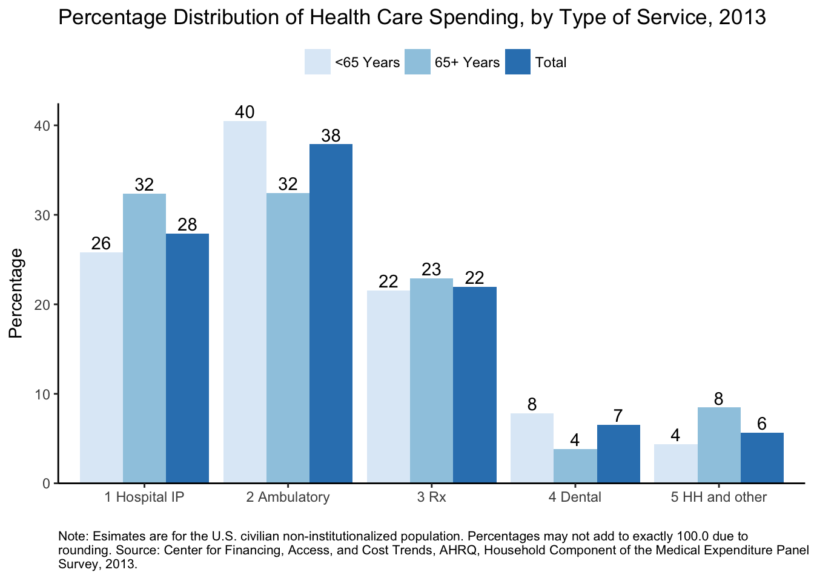

The goal of meps.hc is to wrap the Annual Consolidated Data Files from the Medical Expenditure Panel Survey (meps) Household Component (hc) in an R data package.
All variable labels and value labels are included. Variable names are in lowercase.
Currently the package includes data from 2011-2014. The rest of the files (1996-2010) will be packaged soon.
References
For more information about the consolidated MEPS-HC files, see the AHRQ webpages, or the example code from the
HHS-AHRQ/MEPSrepo by@e-mitchell.For another attempt of downloading the MEPS data, see the
ajdamico/asdfreerepo by@ajdamico.MEPS quick reference guides provide basic information on condition codes, file names, programming statements, and variable names.
Slides on a MEPS workshop provides introductions to various aspects of the MEPS data.
Installation
# install.packages("devtools")
devtools::install_github("jjchern/meps.hc")
# To uninstall the package, use:
# remove.packages("meps.hc")Usage
Load the datasets
# Load tibble via tidyverse for better printout
library(tidyverse)
meps.hc::f2014
# A tibble: 34,875 x 1,838
duid pid dupersid panel famid31 famid42 famid53 famid14
<dbl> <dbl> <chr> <fctr> <fctr> <fctr> <fctr> <fctr>
1 40001 101 40001101 18 panel 18 A A A A
2 40001 102 40001102 18 panel 18 A A A A
3 40001 103 40001103 18 panel 18 A A A A
4 40001 104 40001104 18 panel 18 A A A A
5 40002 101 40002101 18 panel 18 A A A A
6 40004 101 40004101 18 panel 18 A A A A
7 40004 102 40004102 18 panel 18 A A A A
8 40004 103 40004103 18 panel 18 A A A A
9 40004 104 40004104 18 panel 18 A A A A
10 40004 105 40004105 18 panel 18 A A A A
# ... with 34,865 more rows, and 1830 more variables: famidyr <fctr>,
# cpsfamid <fctr>, fcsz1231 <dbl>, fcrp1231 <fctr>, ruletr31 <fctr>,
# ruletr42 <fctr>, ruletr53 <fctr>, ruletr14 <fctr>, rusize31 <fctr>,
# rusize42 <fctr>, rusize53 <fctr>, rusize14 <fctr>, ruclas31 <fctr>,
# ruclas42 <fctr>, ruclas53 <fctr>, ruclas14 <fctr>, famsze31 <fctr>,
# famsze42 <fctr>, famsze53 <fctr>, famsze14 <dbl>, fmrs1231 <fctr>,
# fams1231 <dbl>, famszeyr <dbl>, famrfpyr <fctr>, region31 <fctr>,
# region42 <fctr>, region53 <fctr>, region14 <fctr>, refprs31 <dbl>,
# refprs42 <dbl>, refprs53 <dbl>, refprs14 <dbl>, resp31 <fctr>,
# resp42 <fctr>, resp53 <fctr>, resp14 <fctr>, proxy31 <fctr>,
# proxy42 <fctr>, proxy53 <fctr>, proxy14 <fctr>, intvlang <fctr>,
# begrfm31 <fctr>, begrfy31 <fctr>, endrfm31 <fctr>, endrfy31 <fctr>,
# begrfm42 <fctr>, begrfy42 <fctr>, endrfm42 <fctr>, endrfy42 <fctr>,
# begrfm53 <fctr>, begrfy53 <fctr>, endrfm53 <fctr>, endrfy53 <fctr>,
# endrfm14 <fctr>, endrfy14 <fctr>, keyness <fctr>, inscop31 <fctr>,
# inscop42 <fctr>, inscop53 <fctr>, inscop14 <fctr>, insc1231 <fctr>,
# inscope <fctr>, elgrnd31 <fctr>, elgrnd42 <fctr>, elgrnd53 <fctr>,
# elgrnd14 <fctr>, pstats31 <fctr>, pstats42 <fctr>, pstats53 <fctr>,
# rurslt31 <fctr>, rurslt42 <fctr>, rurslt53 <fctr>, age31x <dbl>,
# age42x <dbl>, age53x <dbl>, age14x <dbl>, agelast <dbl>, dobmm <fctr>,
# dobyy <fctr>, sex <fctr>, racev1x <fctr>, racev2x <fctr>,
# raceax <fctr>, racebx <fctr>, racewx <fctr>, racethx <fctr>,
# hispanx <fctr>, hispncat <fctr>, marry31x <fctr>, marry42x <fctr>,
# marry53x <fctr>, marry14x <fctr>, spouid31 <fctr>, spouid42 <fctr>,
# spouid53 <fctr>, spouid14 <fctr>, spouin31 <fctr>, spouin42 <fctr>,
# spouin53 <fctr>, spouin14 <fctr>, ...Replicate Estimates from the MEPS Summary Table
This section replicates the first row of MEPS summary table for 2013 data:

Estimates

Standard Errors
The code are modified from
Show variable labels for selected variables
meps.hc::f2013 %>%
select(varpsu, varstr, perwt13f, totexp13,
totslf13, totptr13, totmcr13, totmcd13,
totva13, totwcp13, tototh13) %>%
labelled::var_label() %>%
enframe() %>%
unnest() %>%
knitr::kable()| name | value |
|---|---|
| varpsu | variance estimation psu - 2013 . |
| varstr | variance estimation stratum - 2013 |
| perwt13f | final person weight, 2013 |
| totexp13 | total health care exp 13 |
| totslf13 | total amt paid by self/family 13 |
| totptr13 | total amt paid by prv & tri 13 |
| totmcr13 | total amt paid by medicare 13 |
| totmcd13 | total amt paid by medicaid 13 |
| totva13 | total amt paid by va/champva 13 |
| totwcp13 | total amt paid by workers comp 13 |
| tototh13 | total amt paid by oth combined 13 |
Estimate total healthcare expenditures in 2013
library(survey)
# 'adjust': center the stratum at the population mean
# rather than the stratum mean
options(survey.lonely.psu = 'adjust')
mepsdsgn = svydesign(id = ~varpsu, # cluster ids
strata = ~varstr,
weights = ~perwt13f, # sampling weights
data = meps.hc::f2013,
nest = TRUE) # enforce nesting within strata
# Replicate estimates reported in
svytotal(~totexp13, design = mepsdsgn) %>%
as_tibble() %>%
transmute(`2013 US Tot. Exp. (in millions)` = total / 1000000,
`Std. Err. (in millions)` = totexp13 / 1000000) %>%
knitr::kable()| 2013 US Tot. Exp. (in millions) | Std. Err. (in millions) |
|---|---|
| 1400523 | 43378.01 |
Total US population in 2013
# Standard errors are not applicable to population control totals, so we don't need to use a survey function here.
# The total population is equal to the sum of survey weights (PERWT13F).
sum(meps.hc::f2013$perwt13f) %>%
as_tibble() %>%
transmute(`Population (in thousands)` = value / 1000,
`Std. Err.` = "NA") %>%
knitr::kable(digits = 0)| Population (in thousands) | Std. Err. |
|---|---|
| 315722 | NA |
Percent of people with any expense in 2013
# To calculate the percent of people with any expense, first update mepsdsgn with a new indicator variable for persons with an expense:
update(mepsdsgn, any_expense = (totexp13 > 0) * 1) -> mepsdsgn
# Then run the 'svymean' function
svymean(~any_expense, design = mepsdsgn) %>%
as_tibble() %>%
transmute(`Percent with expense` = mean * 100,
`Std. Err.` = any_expense * 100) %>%
knitr::kable(digits = 1)| Percent with expense | Std. Err. |
|---|---|
| 84.4 | 0.4 |
Mean and median expense per person in 2013
# To get expenses per person with an expense, use the 'subset' function to limit the dataset to persons that have an expense (i.e. any_expense == 1).
svymean(~totexp13, design = subset(mepsdsgn, any_expense == 1)) %>%
as_tibble() %>%
transmute(`Mean (per person with an expense)` = mean,
`Std. Err.` = totexp13) %>%
knitr::kable(digits = 0)| Mean (per person with an expense) | Std. Err. |
|---|---|
| 5256 | 118 |
svyquantile(~totexp13,
design = subset(mepsdsgn, any_expense==1),
quantiles = 0.5) %>%
as_tibble() %>%
transmute(`Median (per person with an expense)` = `0.5`,
`Std. Err.` = "NA") %>%
knitr::kable()| Median (per person with an expense) | Std. Err. |
|---|---|
| 1389 | NA |
Distribution by source of payment in 2013
# Before estimating percentages for 'Other' insurance, we need to adjust this variable to match the online table:
# Other = VA + worker's comp + other sources.
update(mepsdsgn, tototh13 = totva13 + totwcp13 + tototh13) -> mepsdsgn
# For percent of total, use the `svyratio` function, and specify the numerator and denominator.
# Use a '+' sign to calculate estimates for multiple variables.
svyratio(~totslf13 + totptr13 + totmcr13 + totmcd13 + tototh13,
denominator = ~totexp13,
design = mepsdsgn) %>%
{tibble(
`Percent of total expenses by source of payment` =
coef(.) %>% names(),
`Estimates` = coef(.) * 100,
`Std. Err.` = SE(.) * 100
)} %>%
knitr::kable(digits = 1)| Percent of total expenses by source of payment | Estimates | Std. Err. |
|---|---|---|
| totslf13/totexp13 | 13.8 | 0.4 |
| totptr13/totexp13 | 40.6 | 1.1 |
| totmcr13/totexp13 | 25.3 | 0.9 |
| totmcd13/totexp13 | 12.4 | 0.7 |
| tototh13/totexp13 | 7.9 | 0.5 |
Replicate Figure 1 in MEPS Statistical Brief #491
This section replicates Figure 1 in MEPS Statistical Brief #491
The code are modified from
-
HHS-AHRQ/MEPS/R:Analyzing MEPS data using R, and HHS-AHRQ/MEPS/R/example_1.RHHS-AHRQ/MEPS/R/example_2.R
Show variable labels for selected variables
meps.hc::f2013 %>%
select(varpsu, varstr, perwt13f, totexp13,
obvexp13, optexp13, ertexp13,
hhaexp13, hhnexp13, visexp13, othexp13,
iptexp13, rxexp13, dvtexp13,
agelast) %>%
labelled::var_label() %>%
enframe() %>%
unnest() %>%
knitr::kable()| name | value |
|---|---|
| varpsu | variance estimation psu - 2013 . |
| varstr | variance estimation stratum - 2013 |
| perwt13f | final person weight, 2013 |
| totexp13 | total health care exp 13 |
| obvexp13 | total office-based exp 13 |
| optexp13 | total outpatient fac + dr exp 13 |
| ertexp13 | total er facility + dr exp 13 |
| hhaexp13 | total home health agency exp 13 |
| hhnexp13 | total home health non-agncy exp 13 |
| visexp13 | total glasses/contact lens exp 13 |
| othexp13 | tot other equip/sply (excl diab) exp 13 |
| iptexp13 | tot hosp ip facility + dr exp 13 |
| rxexp13 | total rx-exp 13 |
| dvtexp13 | total dental care exp 13 |
| agelast | person s age last time eligible |
Estimate distribution of expense by TOS in 2013
# To get ambulatory (OB + OP) and home health/other expenditures, add variables to the mepsdsgn object.
mepsdsgn <- update(mepsdsgn,
ambexp13 = obvexp13 + optexp13 + ertexp13,
hhexp13 = hhaexp13 + hhnexp13 + visexp13 + othexp13)
# Use svyratio to calculate percentage distribution of spending by type of service:
pct_tos = svyratio(
~iptexp13 + ambexp13 + rxexp13 + dvtexp13 + hhexp13,
denominator = ~totexp13,
design = mepsdsgn
)
# Now do the same thing by age group (<65, 65+), using the `subset` function.
pct_tos_lt65 = svyratio(
~iptexp13 + ambexp13 + rxexp13 + dvtexp13 + hhexp13,
denominator = ~totexp13,
design = subset(mepsdsgn, agelast < 65)
)
pct_tos_ge65 = svyratio(
~iptexp13 + ambexp13 + rxexp13 + dvtexp13 + hhexp13,
denominator = ~totexp13,
design = subset(mepsdsgn, agelast >= 65)
)
# Combine all three tables
tibble(tos = names(coef(pct_tos)),
pct = coef(pct_tos) * 100,
age = "Total") -> total
tibble(tos = names(coef(pct_tos_lt65)),
pct = coef(pct_tos_lt65) * 100,
age = "<65 Years") -> lt65
tibble(tos = names(coef(pct_tos_ge65)),
pct = coef(pct_tos_ge65) * 100,
age = "65+ Years") -> ge65
bind_rows(total, lt65, ge65) %>%
mutate(tos = case_when(
grepl("ipt", tos) ~ "1 Hospital IP",
grepl("amb", tos) ~ "2 Ambulatory",
grepl("rx" , tos) ~ "3 Rx",
grepl("dvt", tos) ~ "4 Dental",
grepl("hh" , tos) ~ "5 HH and other"
)) -> df
knitr::kable(df)| tos | pct | age |
|---|---|---|
| 1 Hospital IP | 27.911022 | Total |
| 2 Ambulatory | 37.882294 | Total |
| 3 Rx | 21.977145 | Total |
| 4 Dental | 6.556864 | Total |
| 5 HH and other | 5.672677 | Total |
| 1 Hospital IP | 25.795551 | <65 Years |
| 2 Ambulatory | 40.464733 | <65 Years |
| 3 Rx | 21.540182 | <65 Years |
| 4 Dental | 7.848380 | <65 Years |
| 5 HH and other | 4.351155 | <65 Years |
| 1 Hospital IP | 32.383667 | 65+ Years |
| 2 Ambulatory | 32.422359 | 65+ Years |
| 3 Rx | 22.900994 | 65+ Years |
| 4 Dental | 3.826268 | 65+ Years |
| 5 HH and other | 8.466711 | 65+ Years |
Create the plot
caption = "Note: Esimates are for the U.S. civilian
non-institutionalized population. Percentages may not add to exactly
100.0 due to rounding. Source: Center for Financing, Access, and Cost
Trends, AHRQ, Household Component of the Medical Expenditure Panel
Survey, 2013." %>%
{paste0(strwrap(., 130), sep="", collapse="\n")}
df %>%
ggplot(aes(x = tos, y = pct, fill = age)) +
geom_col(position = "dodge") +
scale_fill_brewer() +
labs(y = "Percentage", x = "",
title = "Percentage Distribution of Health Care Spending, by Type of Service, 2013",
caption = caption) +
geom_text(aes(label = round(pct)),
position = position_dodge(width = 0.9),
vjust = -0.25) +
theme_classic() +
theme(legend.position="top",
legend.title = element_blank(),
axis.line.x = element_line(colour = "black"),
axis.line.y = element_line(colour = "black"),
plot.caption = element_text(size = 8, hjust = 0)) +
scale_y_continuous(expand = c(0,0),
limits = c(0, max(df$pct) + 2))
Analyze MEPS data using Stata
This section shows Stata code and outputs for analyzing MEPS data. The code are modified from HHS-AHQR/MEPS/Stata/exercise_8/.
Show variable labels for selected variables
meps.hc::f2014 %>%
select(totexp14, ipdexp14, ipfexp14, obvexp14,
rxexp14, opdexp14, opfexp14, dvtexp14,
erdexp14, erfexp14, hhaexp14, hhnexp14,
othexp14, visexp14, age14x, age42x,
age31x, varstr, varpsu, perwt14f,
dupersid, duid, cpsfamid, famwt14c,
totslf14, ttlp14x, inscov14, povcat14,
racethx) %>%
labelled::var_label() %>%
enframe() %>%
unnest() %>%
knitr::kable()| name | value |
|---|---|
| totexp14 | total health care exp 14 |
| ipdexp14 | totl hosp staz dr exp 14 |
| ipfexp14 | tot hosp ip facility exp-inc 0 nites 14 |
| obvexp14 | total office-based exp 14 |
| rxexp14 | total rx-exp 14 |
| opdexp14 | total outpatient provider exp 14 |
| opfexp14 | total outpatient facility exp 14 |
| dvtexp14 | total dental care exp 14 |
| erdexp14 | total emergency room dr exp 14 |
| erfexp14 | total er facility exp 14 |
| hhaexp14 | total home health agency exp 14 |
| hhnexp14 | total home health non-agncy exp 14 |
| othexp14 | tot other equip/sply (excl diab) exp 14 |
| visexp14 | total glasses/contact lens exp 14 |
| age14x | age as of 12/31/14 (edited/imputed) |
| age42x | age - r4/2 (edited/imputed) |
| age31x | age - r3/1 (edited/imputed) |
| varstr | variance estimation stratum - 2014 |
| varpsu | variance estimation psu - 2014 . |
| perwt14f | final person weight, 2014 |
| dupersid | person id (duid + pid) |
| duid | dwelling unit id |
| cpsfamid | cpsfamid |
| famwt14c | pov adj family wgt-cps fam on 12/31/14 |
| totslf14 | total amt paid by self/family 14 |
| ttlp14x | person s total income |
| inscov14 | health insurance coverage indicator 14 |
| povcat14 | family inc as % of poverty line - catego |
| racethx | race/ethnicity (edited/imputed) |
Save R rda file as Stata dta file
haven::write_dta(meps.hc::f2014, "README-files/meps_hc_2014.dta")
haven::write_dta(meps.hc::f2013, "README-files/meps_hc_2013.dta")Estimate the total healthcare expenditures in 2014
. set more off
. loc vars dupersid perwt14f varpsu varstr totexp14
. u `vars' using "README-files/meps_hc_2014.dta", clear
. svyset varpsu [pweight = perwt14f], str(varstr)
pweight: perwt14f
VCE: linearized
Single unit: missing
Strata 1: varstr
SU 1: varpsu
FPC 1: <zero>
. svy: total totexp14
(running total on estimation sample)
Survey: Total estimation
Number of strata = 165 Number of obs = 34,875
Number of PSUs = 366 Population size = 318,440,423
Design df = 201
--------------------------------------------------------------
| Linearized
| Total Std. Err. [95% Conf. Interval]
-------------+------------------------------------------------
totexp14 | 1.50e+12 4.98e+10 1.40e+12 1.60e+12
--------------------------------------------------------------Estimate national expenses by type of service in 2014
. set more off
. loc vars totexp14 ipdexp14 ipfexp14 obvexp14 rxexp14 opdexp14 opfexp14 dvtexp
> 14 erdexp14 erfexp14 hhaexp14 hhnexp14 othexp14 visexp14 age14x age42x age31x
> varstr varpsu perwt14f
. u `vars' using "README-files/meps_hc_2014.dta", clear
.
. * define expenditure variables by type of service
. gen total = totexp14
. gen hospital_inpatient = ipdexp14 + ipfexp14
. gen ambulatory = obvexp14 + opdexp14 + opfexp14 + erdexp14 + erfexp
> 14
. gen prescribed_medicines = rxexp14
. gen dental = dvtexp14
. gen home_health_other = hhaexp14 + hhnexp14 + othexp14 + visexp14
. gen diff = total-hospital_inpatient - ambulatory - prescrib
> ed_medicines - dental - home_health_other
.
. * create flag (1/0) variables for persons with an expense, by type of service
. loc exp_vars total hospital_inpatient ambulatory prescribed_medicines dental
> home_health_other
. foreach var in `exp_vars' {
2. gen x_`var' = (`var' > 0)
3. }
.
. * create a summary variable from end of year, 42, and 31 variables
. gen age = age14x if age14x >= 0
(209 missing values generated)
. replace age = age42x if age42x >= 0 & missing(age)
(136 real changes made)
. replace age = age31x if age31x >= 0 & missing(age)
(73 real changes made)
.
. gen agecat = 1 if age >= 0 & age <= 64
(4,105 missing values generated)
. replace agecat = 2 if age>64
(4,105 real changes made)
.
. * qc check on new variables --------------
. tab1 x_total x_hospital_inpatient x_ambulatory x_prescribed_medicines x_de
> ntal x_home_health_other
-> tabulation of x_total
x_total | Freq. Percent Cum.
------------+-----------------------------------
0 | 7,225 20.72 20.72
1 | 27,650 79.28 100.00
------------+-----------------------------------
Total | 34,875 100.00
-> tabulation of x_hospital_inpatient
x_hospital_ |
inpatient | Freq. Percent Cum.
------------+-----------------------------------
0 | 32,682 93.71 93.71
1 | 2,193 6.29 100.00
------------+-----------------------------------
Total | 34,875 100.00
-> tabulation of x_ambulatory
x_ambulator |
y | Freq. Percent Cum.
------------+-----------------------------------
0 | 10,531 30.20 30.20
1 | 24,344 69.80 100.00
------------+-----------------------------------
Total | 34,875 100.00
-> tabulation of x_prescribed_medicines
x_prescribe |
d_medicines | Freq. Percent Cum.
------------+-----------------------------------
0 | 15,948 45.73 45.73
1 | 18,927 54.27 100.00
------------+-----------------------------------
Total | 34,875 100.00
-> tabulation of x_dental
x_dental | Freq. Percent Cum.
------------+-----------------------------------
0 | 22,831 65.47 65.47
1 | 12,044 34.53 100.00
------------+-----------------------------------
Total | 34,875 100.00
-> tabulation of x_home_health_other
x_home_heal |
th_other | Freq. Percent Cum.
------------+-----------------------------------
0 | 28,936 82.97 82.97
1 | 5,939 17.03 100.00
------------+-----------------------------------
Total | 34,875 100.00
. sum total if total>0
Variable | Obs Mean Std. Dev. Min Max
-------------+---------------------------------------------------------
total | 27,650 4938.678 14269.34 1 491858
. sum hospital_inpatient if hospital_inpatient>0
Variable | Obs Mean Std. Dev. Min Max
-------------+---------------------------------------------------------
hospital_i~t | 2,193 17536.95 27716.47 3 414748
. sum ambulatory if ambulatory>0
Variable | Obs Mean Std. Dev. Min Max
-------------+---------------------------------------------------------
ambulatory | 24,344 2069.085 6894.936 1 488881
. sum prescribed_medicines if prescribed_medicines>0
Variable | Obs Mean Std. Dev. Min Max
-------------+---------------------------------------------------------
prescribed~s | 18,927 1608.024 5659.345 1 269756
. sum dental if dental>0
Variable | Obs Mean Std. Dev. Min Max
-------------+---------------------------------------------------------
dental | 12,044 654.5071 1349.928 3 38432
. sum home_health_other if home_health_other>0
Variable | Obs Mean Std. Dev. Min Max
-------------+---------------------------------------------------------
home_healt~r | 5,939 1584.149 6493.048 4 172462
.
. list age age14x age42x age31x in 1/20, table
+--------------------------------+
| age age14x age42x age31x |
|--------------------------------|
1. | 36 36 36 35 |
2. | 36 36 36 36 |
3. | 15 15 14 14 |
4. | 8 8 8 7 |
5. | 85 85 85 85 |
|--------------------------------|
6. | 34 34 33 33 |
7. | 32 32 31 31 |
8. | 15 15 14 14 |
9. | 11 11 10 10 |
10. | 9 9 8 8 |
|--------------------------------|
11. | 4 4 4 3 |
12. | 8 8 8 7 |
13. | 20 -1 20 19 |
14. | 79 79 78 78 |
15. | 47 47 46 46 |
|--------------------------------|
16. | 35 35 35 34 |
17. | 36 36 36 36 |
18. | 11 11 11 10 |
19. | 7 7 7 7 |
20. | 26 26 25 25 |
+--------------------------------+
.
. tab agecat
agecat | Freq. Percent Cum.
------------+-----------------------------------
1 | 30,770 88.23 88.23
2 | 4,105 11.77 100.00
------------+-----------------------------------
Total | 34,875 100.00
. sum age if age>64
Variable | Obs Mean Std. Dev. Min Max
-------------+---------------------------------------------------------
age | 4,105 73.80682 6.66308 65 85
.
. * identify the survey design characteristics
. svyset [pweight = perwt14f], strata(varstr) psu(varpsu) vce(linearized) singl
> eunit(missing)
pweight: perwt14f
VCE: linearized
Single unit: missing
Strata 1: varstr
SU 1: varpsu
FPC 1: <zero>
.
. // percentage distribution of expenses by type of service (stat brief #491 fi
> gure 1)
. svy: ratio (hospital_inpatient: hospital_inpatient / total) ///
> (ambulatory: ambulatory / total) ///
> (prescribed_medicines: prescribed_medicines / total) ///
> (dental: dental / total) ///
> (home_health_other: home_health_other / total)
(running ratio on estimation sample)
Survey: Ratio estimation
Number of strata = 165 Number of obs = 34,875
Number of PSUs = 366 Population size = 318,440,423
Design df = 201
hospital_i~t: hospital_inpatient/total
ambulatory: ambulatory/total
prescribed~s: prescribed_medicines/total
dental: dental/total
home_healt~r: home_health_other/total
----------------------------------------------------------------------
| Linearized
| Ratio Std. Err. [95% Conf. Interval]
---------------------+------------------------------------------------
hospital_inpatient | .254729 .0117416 .2315764 .2778816
ambulatory | .3850812 .0092253 .3668904 .4032719
prescribed_medicines | .2335445 .0095548 .2147041 .2523849
dental | .0612787 .0021079 .0571223 .0654352
home_health_other | .0653674 .0056807 .054166 .0765687
----------------------------------------------------------------------
.
. // percentage of persons with an expense, by type of service
. svy: mean x_total x_hospital_inpatient x_ambulatory x_prescribed_medicines x_
> dental x_home_health_other
(running mean on estimation sample)
Survey: Mean estimation
Number of strata = 165 Number of obs = 34,875
Number of PSUs = 366 Population size = 318,440,423
Design df = 201
------------------------------------------------------------------------
| Linearized
| Mean Std. Err. [95% Conf. Interval]
-----------------------+------------------------------------------------
x_total | .8512277 .0035374 .8442524 .8582029
x_hospital_inpatient | .0657779 .0021471 .0615441 .0700117
x_ambulatory | .7590857 .0043806 .7504479 .7677235
x_prescribed_medicines | .6135182 .0049526 .6037524 .6232839
x_dental | .4143585 .0059531 .4026199 .426097
x_home_health_other | .2040905 .0042286 .1957524 .2124287
------------------------------------------------------------------------
.
. // mean expense per person with an expense, by type of service
. svy, subpop(x_total): mean total
(running mean on estimation sample)
Survey: Mean estimation
Number of strata = 165 Number of obs = 34,875
Number of PSUs = 366 Population size = 318,440,423
Subpop. no. obs = 26,665
Subpop. size = 271,065,295
Design df = 201
--------------------------------------------------------------
| Linearized
| Mean Std. Err. [95% Conf. Interval]
-------------+------------------------------------------------
total | 5531.379 137.9266 5259.41 5803.347
--------------------------------------------------------------
. svy, subpop(x_hospital_inpatient): mean hospital_inpatient
(running mean on estimation sample)
Survey: Mean estimation
Number of strata = 165 Number of obs = 34,875
Number of PSUs = 366 Population size = 318,440,423
Subpop. no. obs = 2,081
Subpop. size = 20,946,346.5
Design df = 201
--------------------------------------------------------------------
| Linearized
| Mean Std. Err. [95% Conf. Interval]
-------------------+------------------------------------------------
hospital_inpatient | 18233.81 857.9769 16542.02 19925.6
--------------------------------------------------------------------
. svy, subpop(x_ambulatory): mean ambulatory
(running mean on estimation sample)
Survey: Mean estimation
Number of strata = 165 Number of obs = 34,875
Number of PSUs = 366 Population size = 318,440,423
Subpop. no. obs = 23,536
Subpop. size = 241,723,564
Design df = 201
--------------------------------------------------------------
| Linearized
| Mean Std. Err. [95% Conf. Interval]
-------------+------------------------------------------------
ambulatory | 2388.585 62.53984 2265.266 2511.903
--------------------------------------------------------------
. svy, subpop(x_prescribed_medicines): mean prescribed_medicines
(running mean on estimation sample)
Survey: Mean estimation
Number of strata = 165 Number of obs = 34,875
Number of PSUs = 366 Population size = 318,440,423
Subpop. no. obs = 18,311
Subpop. size = 195,368,984
Design df = 201
----------------------------------------------------------------------
| Linearized
| Mean Std. Err. [95% Conf. Interval]
---------------------+------------------------------------------------
prescribed_medicines | 1792.344 83.78614 1627.131 1957.556
----------------------------------------------------------------------
. svy, subpop(x_dental): mean dental
(running mean on estimation sample)
Survey: Mean estimation
Number of strata = 165 Number of obs = 34,875
Number of PSUs = 366 Population size = 318,440,423
Subpop. no. obs = 11,775
Subpop. size = 131,948,483
Design df = 201
--------------------------------------------------------------
| Linearized
| Mean Std. Err. [95% Conf. Interval]
-------------+------------------------------------------------
dental | 696.3259 15.4452 665.8705 726.7813
--------------------------------------------------------------
. svy, subpop(x_home_health_other): mean home_health_other
(running mean on estimation sample)
Survey: Mean estimation
Number of strata = 165 Number of obs = 34,875
Number of PSUs = 366 Population size = 318,440,423
Subpop. no. obs = 5,761
Subpop. size = 64,990,677
Design df = 201
-------------------------------------------------------------------
| Linearized
| Mean Std. Err. [95% Conf. Interval]
------------------+------------------------------------------------
home_health_other | 1508.055 139.4998 1232.984 1783.126
-------------------------------------------------------------------
.
. // mean expense per person with an expense, by type of service and age catego
> ry
. svy, subpop(x_total): mean total, over(agecat)
(running mean on estimation sample)
Survey: Mean estimation
Number of strata = 165 Number of obs = 34,875
Number of PSUs = 366 Population size = 318,440,423
Subpop. no. obs = 26,665
Subpop. size = 271,065,295
Design df = 201
1: agecat = 1
2: agecat = 2
--------------------------------------------------------------
| Linearized
Over | Mean Std. Err. [95% Conf. Interval]
-------------+------------------------------------------------
total |
1 | 4429.921 149.9609 4134.223 4725.62
2 | 10890 302.6142 10293.29 11486.7
--------------------------------------------------------------
. svy, subpop(x_hospital_inpatient): mean hospital_inpatient, over(agecat)
(running mean on estimation sample)
Survey: Mean estimation
Number of strata = 165 Number of obs = 34,875
Number of PSUs = 366 Population size = 318,440,423
Subpop. no. obs = 2,081
Subpop. size = 20,946,346.5
Design df = 201
1: agecat = 1
2: agecat = 2
--------------------------------------------------------------------
| Linearized
Over | Mean Std. Err. [95% Conf. Interval]
-------------------+------------------------------------------------
hospital_inpatient |
1 | 17663.08 1263.521 15171.63 20154.54
2 | 19191.14 1131.91 16959.2 21423.08
--------------------------------------------------------------------
. svy, subpop(x_ambulatory): mean ambulatory, over(agecat)
(running mean on estimation sample)
Survey: Mean estimation
Number of strata = 165 Number of obs = 34,875
Number of PSUs = 366 Population size = 318,440,423
Subpop. no. obs = 23,536
Subpop. size = 241,723,564
Design df = 201
1: agecat = 1
2: agecat = 2
--------------------------------------------------------------
| Linearized
Over | Mean Std. Err. [95% Conf. Interval]
-------------+------------------------------------------------
ambulatory |
1 | 2055.61 66.80712 1923.877 2187.343
2 | 3859.418 168.7558 3526.659 4192.177
--------------------------------------------------------------
. svy, subpop(x_prescribed_medicines): mean prescribed_medicines, over(agecat)
(running mean on estimation sample)
Survey: Mean estimation
Number of strata = 165 Number of obs = 34,875
Number of PSUs = 366 Population size = 318,440,423
Subpop. no. obs = 18,311
Subpop. size = 195,368,984
Design df = 201
1: agecat = 1
2: agecat = 2
----------------------------------------------------------------------
| Linearized
Over | Mean Std. Err. [95% Conf. Interval]
---------------------+------------------------------------------------
prescribed_medicines |
1 | 1560.906 106.3327 1351.236 1770.577
2 | 2602.126 100.7413 2403.48 2800.771
----------------------------------------------------------------------
. svy, subpop(x_dental): mean dental, over(agecat)
(running mean on estimation sample)
Survey: Mean estimation
Number of strata = 165 Number of obs = 34,875
Number of PSUs = 366 Population size = 318,440,423
Subpop. no. obs = 11,775
Subpop. size = 131,948,483
Design df = 201
1: agecat = 1
2: agecat = 2
--------------------------------------------------------------
| Linearized
Over | Mean Std. Err. [95% Conf. Interval]
-------------+------------------------------------------------
dental |
1 | 657.05 17.34416 622.8501 691.2498
2 | 892.5962 44.61207 804.6285 980.5639
--------------------------------------------------------------
. svy, subpop(x_home_health_other): mean home_health_other, over(agecat)
(running mean on estimation sample)
Survey: Mean estimation
Number of strata = 165 Number of obs = 34,875
Number of PSUs = 366 Population size = 318,440,423
Subpop. no. obs = 5,761
Subpop. size = 64,990,677
Design df = 201
1: agecat = 1
2: agecat = 2
-------------------------------------------------------------------
| Linearized
Over | Mean Std. Err. [95% Conf. Interval]
------------------+------------------------------------------------
home_health_other |
1 | 1025.308 161.522 706.8131 1343.803
2 | 2923.966 209.7328 2510.407 3337.524
-------------------------------------------------------------------
Expenditures and utilization of antipsychotics
This subsection replicates figures from statistical brief #275
Construct family-level estimates
This exercise illustrates how to construct family level variables from person level data.
There are two definitions of family unit in MEPS:
CPS Family: ID is DUID + CPSFAMID. Corresponding weight is FAMWT14C. MEPS Family: ID is DUID + FAMIDYR. Corresponding weight is FAMWT14F. The CPS family is used in this exercise.
. set more off
. loc vars dupersid duid cpsfamid famwt14c varstr varpsu totslf14 ttlp14x
. use `vars' using "README-files/meps_hc_2014.dta", clear
.
. sort duid cpsfamid
. list duid cpsfamid totslf14 ttlp14x in 1/20, sepby(duid)
+---------------------------------------+
| duid cpsfamid totslf14 ttlp14x |
|---------------------------------------|
1. | 40001 A 135 0 |
2. | 40001 A 89 0 |
3. | 40001 A 165 12000 |
4. | 40001 A 152 56000 |
|---------------------------------------|
5. | 40002 A 2 27030 |
|---------------------------------------|
6. | 40004 A 80 0 |
7. | 40004 A 141 0 |
8. | 40004 A 0 0 |
9. | 40004 A 0 12000 |
10. | 40004 A 12 0 |
11. | 40004 A 0 0 |
12. | 40004 A 159 0 |
13. | 40004 A 0 0 |
|---------------------------------------|
14. | 40005 A 2919 39945 |
|---------------------------------------|
15. | 40009 A 52 34031 |
|---------------------------------------|
16. | 40010 A 210 0 |
17. | 40010 A 614 84000 |
18. | 40010 A 56 0 |
19. | 40010 A 40 56000 |
|---------------------------------------|
20. | 40011 A 0 0 |
+---------------------------------------+
.
. by duid cpsfamid: egen famoop = sum(totslf14)
. by duid cpsfamid: egen faminc = sum(ttlp14x)
. by duid cpsfamid: gen famsize = _N
.
. list duid famwt14c famsize famoop faminc totslf14 ttlp14x in 1/20, sepby(duid
> )
+--------------------------------------------------------------------+
| duid famwt14c famsize famoop faminc totslf14 ttlp14x |
|--------------------------------------------------------------------|
1. | 40001 6540.855 4 541 68000 135 0 |
2. | 40001 6540.855 4 541 68000 89 0 |
3. | 40001 6540.855 4 541 68000 165 12000 |
4. | 40001 6540.855 4 541 68000 152 56000 |
|--------------------------------------------------------------------|
5. | 40002 8827.9997 1 2 27030 2 27030 |
|--------------------------------------------------------------------|
6. | 40004 3883.9568 8 392 12000 80 0 |
7. | 40004 3883.9568 8 392 12000 141 0 |
8. | 40004 3883.9568 8 392 12000 0 0 |
9. | 40004 3883.9568 8 392 12000 0 12000 |
10. | 40004 3883.9568 8 392 12000 12 0 |
11. | 40004 3883.9568 8 392 12000 0 0 |
12. | 40004 3883.9568 8 392 12000 159 0 |
13. | 40004 0 8 392 12000 0 0 |
|--------------------------------------------------------------------|
14. | 40005 4676.8667 1 2919 39945 2919 39945 |
|--------------------------------------------------------------------|
15. | 40009 5826.4716 1 52 34031 52 34031 |
|--------------------------------------------------------------------|
16. | 40010 7601.436 4 920 140000 210 0 |
17. | 40010 7601.436 4 920 140000 614 84000 |
18. | 40010 7601.436 4 920 140000 56 0 |
19. | 40010 7601.436 4 920 140000 40 56000 |
|--------------------------------------------------------------------|
20. | 40011 4747.9969 4 0 22500 0 0 |
+--------------------------------------------------------------------+
.
. sort duid cpsfamid famwt14c
. by duid cpsfamid: keep if _n==_N
(19,875 observations deleted)
.
. list duid cpsfamid famwt14c famsize famoop faminc in 1/20
+----------------------------------------------------------+
| duid cpsfamid famwt14c famsize famoop faminc |
|----------------------------------------------------------|
1. | 40001 A 6540.855 4 541 68000 |
2. | 40002 A 8827.9997 1 2 27030 |
3. | 40004 A 3883.9568 8 392 12000 |
4. | 40005 A 4676.8667 1 2919 39945 |
5. | 40009 A 5826.4716 1 52 34031 |
|----------------------------------------------------------|
6. | 40010 A 7601.436 4 920 140000 |
7. | 40011 A 4747.9969 4 0 22500 |
8. | 40012 A 13579.432 4 177 193561 |
9. | 40014 A 5232.9521 1 954 0 |
10. | 40014 B 6675.6329 1 5 14720 |
|----------------------------------------------------------|
11. | 40014 C 5180.2438 1 2 0 |
12. | 40015 A 19589.164 3 2275 99945 |
13. | 40016 A 4050.4395 3 21 13200 |
14. | 40017 A 22006.184 3 648 200000 |
15. | 40019 A 3638.4341 5 833 85536 |
|----------------------------------------------------------|
16. | 40020 A 12530.817 5 1941 47881 |
17. | 40021 A 4682.9354 4 782 20800 |
18. | 40022 A 1887.6775 1 0 17000 |
19. | 40022 B 5843.5936 4 37 50000 |
20. | 40023 A 6209.2947 4 3417 82800 |
+----------------------------------------------------------+
.
. // tabmiss: user-written command to tabulate missing values
. tabmiss famsize famoop faminc
Variable | Obs Missings Feq.Missings NonMiss Feq.NonMiss
-------------+---------------------------------------------------------------
famsize | 15000 0 0 15000 100
famoop | 15000 0 0 15000 100
faminc | 15000 0 0 15000 100
.
. keep if famwt14c > 0
(867 observations deleted)
. svyset [pweight = famwt14c], strata(varstr) psu(varpsu) vce(linearized) singl
> eunit(missing)
pweight: famwt14c
VCE: linearized
Single unit: missing
Strata 1: varstr
SU 1: varpsu
FPC 1: <zero>
. svy: mean famsize famoop faminc
(running mean on estimation sample)
Survey: Mean estimation
Number of strata = 165 Number of obs = 14,133
Number of PSUs = 365 Population size = 140,282,371
Design df = 200
--------------------------------------------------------------
| Linearized
| Mean Std. Err. [95% Conf. Interval]
-------------+------------------------------------------------
famsize | 2.221791 .0205013 2.181364 2.262217
famoop | 1279.595 28.96032 1222.488 1336.702
faminc | 63373.64 1015.978 61370.24 65377.05
--------------------------------------------------------------Pool multiple years of MEPS data
Pooling two-years of data requires recalculating personal weights.
This exercise illustrates how to pool meps data files from different years the example used is population age 26-30 who are uninsured but have high income.
Data from 2013 and 2014 are pooled.
Variables with year specific names must be renamed before combining files in this program the insurance coverage variables ‘INSCOV13’ and ‘INSCOV14’ are renamed to ‘INSCOV’.
. // rename year specific variables prior to combining files
. use dupersid inscov13 perwt13f varstr varpsu povcat13 agelast totslf13 using
> "README-files/meps_hc_2013.dta", clear
. rename inscov13 inscov
. rename perwt13f perwt
. rename povcat13 povcat
. rename totslf13 totslf
. tempfile yr1
. save "`yr1'"
file /var/folders/m8/68z5d14d7mv9qyf1bd69ych40000gn/T//St11005.000001 saved
.
. use dupersid inscov14 perwt14f varstr varpsu povcat14 agelast totslf14 using
> "README-files/meps_hc_2014.dta", clear
. rename inscov14 inscov
. rename perwt14f perwt
. rename povcat14 povcat
. rename totslf14 totslf
.
. append using "`yr1'", generate(yearnum)
.
. fre inscov
inscov -- health insurance coverage indicator 14
---------------------------------------------------------------------
| Freq. Percent Valid Cum.
------------------------+--------------------------------------------
Valid 1 1 any private | 35914 50.01 50.01 50.01
2 2 public only | 24296 33.83 33.83 83.84
3 3 uninsured | 11605 16.16 16.16 100.00
Total | 71815 100.00 100.00
---------------------------------------------------------------------
. fre povcat
povcat -- family inc as % of poverty line - catego
-----------------------------------------------------------------------
| Freq. Percent Valid Cum.
--------------------------+--------------------------------------------
Valid 1 1 poor/negative | 17492 24.36 24.36 24.36
2 2 near poor | 4636 6.46 6.46 30.81
3 3 low income | 12504 17.41 17.41 48.22
4 4 middle income | 19791 27.56 27.56 75.78
5 5 high income | 17392 24.22 24.22 100.00
Total | 71815 100.00 100.00
-----------------------------------------------------------------------
.
. gen poolwt = perwt / 2
. gen subpop = (agelast >= 26 & agelast <= 30 & inscov == 3 & povcat == 5)
.
. tab1 agelast inscov povcat if subpop == 1
-> tabulation of agelast if subpop == 1
person s |
age last |
time |
eligible | Freq. Percent Cum.
------------+-----------------------------------
26 | 29 20.86 20.86
27 | 39 28.06 48.92
28 | 23 16.55 65.47
29 | 31 22.30 87.77
30 | 17 12.23 100.00
------------+-----------------------------------
Total | 139 100.00
-> tabulation of inscov if subpop == 1
health |
insurance |
coverage |
indicator 14 | Freq. Percent Cum.
--------------+-----------------------------------
3 uninsured | 139 100.00 100.00
--------------+-----------------------------------
Total | 139 100.00
-> tabulation of povcat if subpop == 1
family inc as % |
of poverty line |
- catego | Freq. Percent Cum.
----------------+-----------------------------------
5 high income | 139 100.00 100.00
----------------+-----------------------------------
Total | 139 100.00
. tab subpop yearnum
| yearnum
subpop | 0 1 | Total
-----------+----------------------+----------
0 | 34,815 36,861 | 71,676
1 | 60 79 | 139
-----------+----------------------+----------
Total | 34,875 36,940 | 71,8. summarize
Variable | Obs Mean Std. Dev. Min Max
-------------+---------------------------------------------------------
dupersid | 0
agelast | 71,815 34.882 22.4086 0 85
povcat | 71,815 3.208243 1.496595 1 5
inscov | 71,815 1.661505 .7396724 1 3
totslf | 71,815 421.1674 1447.036 0 108389
-------------+---------------------------------------------------------
perwt | 71,815 8830.501 8581.434 0 94410.39
varstr | 71,815 1084.443 48.94023 1001 1165
varpsu | 71,815 1.637569 .6163208 1 3
yearnum | 71,815 .5143772 .4997967 0 1
poolwt | 71,815 4415.25 4290.717 0 47205.2
-------------+---------------------------------------------------------
subpop | 71,815 .0019355 .0439524 0 1
. tabmiss
Variable | Obs Missings Feq.Missings NonMiss Feq.NonMiss
-------------+---------------------------------------------------------------
dupersid | 71815 0 0 71815 100
agelast | 71815 0 0 71815 100
povcat | 71815 0 0 71815 100
inscov | 71815 0 0 71815 100
totslf | 71815 0 0 71815 100
perwt | 71815 0 0 71815 100
varstr | 71815 0 0 71815 100
varpsu | 71815 0 0 71815 100
yearnum | 71815 0 0 71815 100
poolwt | 71815 0 0 71815 100
subpop | 71815 0 0 71815 100
.
. svyset [pweight = poolwt], strata(varstr) psu(varpsu) vce(linearized) singleu
> nit(missing)
pweight: poolwt
VCE: linearized
Single unit: missing
Strata 1: varstr
SU 1: varpsu
FPC 1: <zero>
.
. // weighted estimate on totslf for combined data w/age=26-30, uninsured whole
> year, and high income
. svy, subpop(subpop): mean totslf
(running mean on estimation sample)
Survey: Mean estimation
Number of strata = 73 Number of obs = 37,121
Number of PSUs = 169 Population size = 152,825,959
Subpop. no. obs = 114
Subpop. size = 606,952.6488
Design df = 96
--------------------------------------------------------------
| Linearized
| Mean Std. Err. [95% Conf. Interval]
-------------+------------------------------------------------
totslf | 198.7844 64.22224 71.30424 326.2645
--------------------------------------------------------------
Note: 92 strata omitted because they contain no subpopulation
members.Construct insurance status variables from monthly insurance variables
This exercise illustrates how to construct insurance status variables from monthly insurance variables (see below) in the person level data.
| Variable Name | Description |
|---|---|
| TRImm14X | Covered by TRICARE/CHAMPVA in mm (Ed) |
| MCRmm14 | Covered by Medicare in mm |
| MCRmm14X | Covered by Medicare in mm (Ed) |
| MCDmm14 | Covered by Medicaid or SCHIP in mm |
| MCDmm14X | Covered by Medicaid or SCHIP in mm (Ed) |
| OPAmm14 | Covered by Other Public A Ins in mm |
| OPBmm14 | Covered by Other Public B Ins in mm |
| PUBmm14X | Covered by Any Public Ins in mm (Ed) |
| PEGmm14 | Covered by Empl Union Ins in mm |
| PDKmm14 | Coverer by Priv Ins (Source Unknown) in mm |
| PNGmm14 | Covered by Nongroup Ins in mm |
| POGmm14 | Covered by Other Group Ins in mm |
| PRSmm14 | Covered by Self-Emp Ins in mm |
| POUmm14 | Covered by Holder Outside of RU in mm |
| PRImm14 | Covered by Private Ins in mm |
where mm = JA-DE (January - December)
. use dupersid varstr varpsu perwt14f racethx peg??14 pou??14 pdk??14 png??14 p
> og??14 prs??14 pri??14 ins??14x mcd??14x mcr??14x tri??14x opa??14 opb??14 us
> ing "README-files/meps_hc_2014.dta", clear
.
. local opalist opaja14 opafe14 opama14 opaap14 opamy14 opaju14 opajl14 opaau14
> opase14 opaoc14 opano14 opade14
. local opblist opbja14 opbfe14 opbma14 opbap14 opbmy14 opbju14 opbjl14 opbau14
> opbse14 opboc14 opbno14 opbde14
. local peglist pegja14 pegfe14 pegma14 pegap14 pegmy14 pegju14 pegjl14 pegau14
> pegse14 pegoc14 pegno14 pegde14
. local trilist trija14x trife14x trima14x triap14x trimy14x triju14x trijl14x
> triau14x trise14x trioc14x trino14x tride14x
. local poulist pouja14 poufe14 pouma14 pouap14 poumy14 pouju14 poujl14 pouau14
> pouse14 pouoc14 pouno14 poude14
. local pdklist pdkja14 pdkfe14 pdkma14 pdkap14 pdkmy14 pdkju14 pdkjl14 pdkau14
> pdkse14 pdkoc14 pdkno14 pdkde14
. local pnglist pngja14 pngfe14 pngma14 pngap14 pngmy14 pngju14 pngjl14 pngau14
> pngse14 pngoc14 pngno14 pngde14
. local poglist pogja14 pogfe14 pogma14 pogap14 pogmy14 pogju14 pogjl14 pogau14
> pogse14 pogoc14 pogno14 pogde14
. local prslist prsja14 prsfe14 prsma14 prsap14 prsmy14 prsju14 prsjl14 prsau14
> prsse14 prsoc14 prsno14 prsde14
. local mcrlist mcrja14x mcrfe14x mcrma14x mcrap14x mcrmy14x mcrju14x mcrjl14x
> mcrau14x mcrse14x mcroc14x mcrno14x mcrde14x
. local mcdlist mcdja14x mcdfe14x mcdma14x mcdap14x mcdmy14x mcdju14x mcdjl14x
> mcdau14x mcdse14x mcdoc14x mcdno14x mcdde14x
. local prilist prija14 prife14 prima14 priap14 primy14 priju14 prijl14 priau14
> prise14 prioc14 prino14 pride14
. local inslist insja14x insfe14x insma14x insap14x insmy14x insju14x insjl14x
> insau14x insse14x insoc14x insno14x insde14x
.
. * 1) count number of months with insurance
. egen pri_n = anycount(`prilist'), v(1)
. egen ins_n = anycount(`inslist'), v(1)
. egen unins_n = anycount(`inslist'), v(2)
. egen mcd_n = anycount(`mcdlist'), v(1)
. egen mcr_n = anycount(`mcrlist'), v(1)
. egen tri_n = anycount(`trilist'), v(1)
. egen ref_n = anycount(`inslist'), v(1 2)
.
. *2) create flags for various types of insu
. forval i = 1/12 {
2. local opa = word("`opalist'",`i')
3. local opb = word("`opblist'",`i')
4. gen op`i' = (`opa' == 1 | `opb' == 1)
5. }
. egen opab_n = anycount(op1-op12), v(1)
.
. forval i = 1/12 {
2. local peg = word("`peglist'",`i')
3. local tri = word("`trilist'",`i')
4. local pou = word("`poulist'",`i')
5. local pdk = word("`pdklist'",`i')
6. gen grp`i' = (`peg' == 1 | `tri' == 1 |`pou' == 1 | `pdk' == 1)
7. }
. egen grp_n = anycount(grp1-grp12), v(1)
.
. forval i=1/12 {
2. local png = word("`pnglist'",`i')
3. local pog = word("`poglist'",`i')
4. local prs = word("`prslist'",`i')
5. gen ng`i' = (`png' == 1 | `pog' == 1 |`prs' == 1)
6. }
. egen ng_n = anycount(ng1-ng12), v(1)
.
. forval i=1/12 {
2. local mcr = word("`mcrlist'",`i')
3. local mcd = word("`mcdlist'",`i')
4. local opa = word("`opalist'",`i')
5. local opb = word("`opblist'",`i')
6. gen pub`i' = (`mcr' == 1 | `mcd' == 1 |`opa' == 1 | `opb' == 1)
7. }
. egen pub_n = anycount(pub1-pub12), v(1)
.
. gen full_insu = (unins_n == 0)
. gen group_ins1 = (grp_n > 0)
. gen group_ins2 = (grp_n > 0 & grp_n == ref_n)
. gen ng_ins = (ng_n > 0)
.
. tab1 pri_n ins_n unins_n mcd_n mcr_n tri_n opab_n grp_n ng_n pub_n ref_n
-> tabulation of pri_n
see notes | Freq. Percent Cum.
------------+-----------------------------------
0 | 33,329 95.57 95.57
1 | 142 0.41 95.97
2 | 145 0.42 96.39
3 | 137 0.39 96.78
4 | 149 0.43 97.21
5 | 168 0.48 97.69
6 | 170 0.49 98.18
7 | 134 0.38 98.56
8 | 154 0.44 99.01
9 | 135 0.39 99.39
10 | 125 0.36 99.75
11 | 87 0.25 100.00
------------+-----------------------------------
Total | 34,875 100.00
-> tabulation of ins_n
see notes | Freq. Percent Cum.
------------+-----------------------------------
0 | 33,329 95.57 95.57
1 | 142 0.41 95.97
2 | 145 0.42 96.39
3 | 137 0.39 96.78
4 | 149 0.43 97.21
5 | 168 0.48 97.69
6 | 170 0.49 98.18
7 | 134 0.38 98.56
8 | 154 0.44 99.01
9 | 135 0.39 99.39
10 | 125 0.36 99.75
11 | 87 0.25 100.00
------------+-----------------------------------
Total | 34,875 100.00
-> tabulation of unins_n
see notes | Freq. Percent Cum.
------------+-----------------------------------
0 | 4,968 14.25 14.25
1 | 194 0.56 14.80
2 | 274 0.79 15.59
3 | 316 0.91 16.49
4 | 407 1.17 17.66
5 | 503 1.44 19.10
6 | 504 1.45 20.55
7 | 456 1.31 21.86
8 | 634 1.82 23.67
9 | 703 2.02 25.69
10 | 692 1.98 27.67
11 | 687 1.97 29.64
12 | 24,537 70.36 100.00
------------+-----------------------------------
Total | 34,875 100.00
-> tabulation of mcd_n
see notes | Freq. Percent Cum.
------------+-----------------------------------
0 | 33,329 95.57 95.57
1 | 142 0.41 95.97
2 | 145 0.42 96.39
3 | 137 0.39 96.78
4 | 149 0.43 97.21
5 | 168 0.48 97.69
6 | 170 0.49 98.18
7 | 134 0.38 98.56
8 | 154 0.44 99.01
9 | 135 0.39 99.39
10 | 125 0.36 99.75
11 | 87 0.25 100.00
------------+-----------------------------------
Total | 34,875 100.00
-> tabulation of mcr_n
see notes | Freq. Percent Cum.
------------+-----------------------------------
0 | 33,329 95.57 95.57
1 | 142 0.41 95.97
2 | 145 0.42 96.39
3 | 137 0.39 96.78
4 | 149 0.43 97.21
5 | 168 0.48 97.69
6 | 170 0.49 98.18
7 | 134 0.38 98.56
8 | 154 0.44 99.01
9 | 135 0.39 99.39
10 | 125 0.36 99.75
11 | 87 0.25 100.00
------------+-----------------------------------
Total | 34,875 100.00
-> tabulation of tri_n
see notes | Freq. Percent Cum.
------------+-----------------------------------
0 | 33,329 95.57 95.57
1 | 142 0.41 95.97
2 | 145 0.42 96.39
3 | 137 0.39 96.78
4 | 149 0.43 97.21
5 | 168 0.48 97.69
6 | 170 0.49 98.18
7 | 134 0.38 98.56
8 | 154 0.44 99.01
9 | 135 0.39 99.39
10 | 125 0.36 99.75
11 | 87 0.25 100.00
------------+-----------------------------------
Total | 34,875 100.00
-> tabulation of opab_n
op1 op2 op3 |
op4 op5 op6 |
op7 op8 op9 |
op10 op11 |
op12 == 1 | Freq. Percent Cum.
------------+-----------------------------------
0 | 33,329 95.57 95.57
1 | 142 0.41 95.97
2 | 145 0.42 96.39
3 | 137 0.39 96.78
4 | 149 0.43 97.21
5 | 168 0.48 97.69
6 | 170 0.49 98.18
7 | 134 0.38 98.56
8 | 154 0.44 99.01
9 | 135 0.39 99.39
10 | 125 0.36 99.75
11 | 87 0.25 100.00
------------+-----------------------------------
Total | 34,875 100.00
-> tabulation of grp_n
grp1 grp2 |
grp3 grp4 |
grp5 grp6 |
grp7 grp8 |
grp9 grp10 |
grp11 grp12 |
== 1 | Freq. Percent Cum.
------------+-----------------------------------
0 | 33,329 95.57 95.57
1 | 142 0.41 95.97
2 | 145 0.42 96.39
3 | 137 0.39 96.78
4 | 149 0.43 97.21
5 | 168 0.48 97.69
6 | 170 0.49 98.18
7 | 134 0.38 98.56
8 | 154 0.44 99.01
9 | 135 0.39 99.39
10 | 125 0.36 99.75
11 | 87 0.25 100.00
------------+-----------------------------------
Total | 34,875 100.00
-> tabulation of ng_n
ng1 ng2 ng3 |
ng4 ng5 ng6 |
ng7 ng8 ng9 |
ng10 ng11 |
ng12 == 1 | Freq. Percent Cum.
------------+-----------------------------------
0 | 33,329 95.57 95.57
1 | 142 0.41 95.97
2 | 145 0.42 96.39
3 | 137 0.39 96.78
4 | 149 0.43 97.21
5 | 168 0.48 97.69
6 | 170 0.49 98.18
7 | 134 0.38 98.56
8 | 154 0.44 99.01
9 | 135 0.39 99.39
10 | 125 0.36 99.75
11 | 87 0.25 100.00
------------+-----------------------------------
Total | 34,875 100.00
-> tabulation of pub_n
pub1 pub2 |
pub3 pub4 |
pub5 pub6 |
pub7 pub8 |
pub9 pub10 |
pub11 pub12 |
== 1 | Freq. Percent Cum.
------------+-----------------------------------
0 | 33,329 95.57 95.57
1 | 142 0.41 95.97
2 | 145 0.42 96.39
3 | 137 0.39 96.78
4 | 149 0.43 97.21
5 | 168 0.48 97.69
6 | 170 0.49 98.18
7 | 134 0.38 98.56
8 | 154 0.44 99.01
9 | 135 0.39 99.39
10 | 125 0.36 99.75
11 | 87 0.25 100.00
------------+-----------------------------------
Total | 34,875 100.00
-> tabulation of ref_n
see notes | Freq. Percent Cum.
------------+-----------------------------------
0 | 4,558 13.07 13.07
1 | 170 0.49 13.56
2 | 206 0.59 14.15
3 | 251 0.72 14.87
4 | 306 0.88 15.74
5 | 437 1.25 17.00
6 | 415 1.19 18.19
7 | 403 1.16 19.34
8 | 578 1.66 21.00
9 | 679 1.95 22.95
10 | 656 1.88 24.83
11 | 682 1.96 26.78
12 | 25,534 73.22 100.00
------------+-----------------------------------
Total | 34,875 100.00
. tab1 full_ins group_ins1 group_ins2 ng_ins
-> tabulation of full_insu
full_insu | Freq. Percent Cum.
------------+-----------------------------------
0 | 29,907 85.75 85.75
1 | 4,968 14.25 100.00
------------+-----------------------------------
Total | 34,875 100.00
-> tabulation of group_ins1
group_ins1 | Freq. Percent Cum.
------------+-----------------------------------
0 | 33,329 95.57 95.57
1 | 1,546 4.43 100.00
------------+-----------------------------------
Total | 34,875 100.00
-> tabulation of group_ins2
group_ins2 | Freq. Percent Cum.
------------+-----------------------------------
0 | 34,465 98.82 98.82
1 | 410 1.18 100.00
------------+-----------------------------------
Total | 34,875 100.00
-> tabulation of ng_ins
ng_ins | Freq. Percent Cum.
------------+-----------------------------------
0 | 33,329 95.57 95.57
1 | 1,546 4.43 100.00
------------+-----------------------------------
Total | 34,875 100.00
. tab full_insu unins_n
| see notes
full_insu | 0 1 2 3 4 | Total
-----------+-------------------------------------------------------+----------
0 | 0 194 274 316 407 | 29,907
1 | 4,968 0 0 0 0 | 4,968
-----------+-------------------------------------------------------+----------
Total | 4,968 194 274 316 407 | 34,8 | see notes
full_insu | 5 6 7 8 9 | Total
-----------+-------------------------------------------------------+----------
0 | 503 504 456 634 703 | 29,907
1 | 0 0 0 0 0 | 4,968
-----------+-------------------------------------------------------+----------
Total | 503 504 456 634 703 | 34,875
| see notes
full_insu | 10 11 12 | Total
-----------+---------------------------------+----------
0 | 692 687 24,537 | 29,907
1 | 0 0 0 | 4,968
-----------+---------------------------------+----------
Total | 692 687 24,537 | 34,875
. tab group_ins1 grp_n
| grp1 grp2 grp3 grp4 grp5 grp6 grp7 grp8 grp9 grp10
| grp11 grp12 == 1
group_ins1 | 0 1 2 3 4 | Total
-----------+-------------------------------------------------------+----------
0 | 33,329 0 0 0 0 | 33,329
1 | 0 142 145 137 149 | 1,546
-----------+-------------------------------------------------------+----------
Total | 33,329 142 145 137 149 | 34,875
| grp1 grp2 grp3 grp4 grp5 grp6 grp7 grp8 grp9 grp10
| grp11 grp12 == 1
group_ins1 | 5 6 7 8 9 | Total
-----------+-------------------------------------------------------+----------
0 | 0 0 0 0 0 | 33,329
1 | 168 170 134 154 135 | 1,546
-----------+-------------------------------------------------------+----------
Total | 168 170 134 154 135 | 34,875
| grp1 grp2 grp3 grp4
| grp5 grp6 grp7 grp8
| grp9 grp10 grp11
| grp12 == 1
group_ins1 | 10 11 | Total
-----------+----------------------+----------
0 | 0 0 | 33,329
1 | 125 87 | 1,546
-----------+----------------------+----------
Total | 125 87 | 34,875
. tab ng_ins ng_n
| ng1 ng2 ng3 ng4 ng5 ng6 ng7 ng8 ng9 ng10 ng11 ng12 ==
| 1
ng_ins | 0 1 2 3 4 | Total
-----------+-------------------------------------------------------+----------
0 | 33,329 0 0 0 0 | 33,329
1 | 0 142 145 137 149 | 1,546
-----------+-------------------------------------------------------+----------
Total | 33,329 142 145 137 149 | 34,875
| ng1 ng2 ng3 ng4 ng5 ng6 ng7 ng8 ng9 ng10 ng11 ng12 ==
| 1
ng_ins | 5 6 7 8 9 | Total
-----------+-------------------------------------------------------+----------
0 | 0 0 0 0 0 | 33,329
1 | 168 170 134 154 135 | 1,546
-----------+-------------------------------------------------------+----------
Total | 168 170 134 154 135 | 34,875
| ng1 ng2 ng3 ng4 ng5
| ng6 ng7 ng8 ng9 ng10
| ng11 ng12 == 1
ng_ins | 10 11 | Total
-----------+----------------------+----------
0 | 0 0 | 33,329
1 | 125 87 | 1,546
-----------+----------------------+----------
Total | 125 87 | 34,875
.
. *3) calculate % of persons covered by insu
. svyset [pweight=perwt14f], strata(varstr) psu(varpsu) vce(linearized) singleu
> nit(missing)
pweight: perwt14f
VCE: linearized
Single unit: missing
Strata 1: varstr
SU 1: varpsu
FPC 1: <zero>
. svy: mean full_insu group_ins1 group_ins2 ng_ins, over(racethx)
(running mean on estimation sample)
Survey: Mean estimation
Number of strata = 165 Number of obs = 34,875
Number of PSUs = 366 Population size = 318,440,423
Design df = 201
_subpop_1: racethx = 1 hispanic
_subpop_2: racethx = 2 non-hispanic white only
_subpop_3: racethx = 3 non-hispanic black only
_subpop_4: racethx = 4 non-hispanic asian only
_subpop_5: racethx = 5 non-hispanic other race or mul
--------------------------------------------------------------
| Linearized
Over | Mean Std. Err. [95% Conf. Interval]
-------------+------------------------------------------------
full_insu |
_subpop_1 | .2151917 .0101965 .1950859 .2352974
_subpop_2 | .0643303 .0037492 .0569375 .0717231
_subpop_3 | .1163546 .0064317 .1036724 .1290368
_subpop_4 | .0812691 .0086048 .0643018 .0982365
_subpop_5 | .0724555 .0122909 .0482198 .0966912
-------------+------------------------------------------------
group_ins1 |
_subpop_1 | .0264375 .0021425 .0222127 .0306622
_subpop_2 | .0223652 .0017007 .0190117 .0257186
_subpop_3 | .0287738 .0029039 .0230478 .0344998
_subpop_4 | .015177 .0029016 .0094555 .0208985
_subpop_5 | .0338332 .0071045 .0198242 .0478421
-------------+------------------------------------------------
group_ins2 |
_subpop_1 | .0052626 .0008027 .0036799 .0068453
_subpop_2 | .0020584 .0004588 .0011537 .002963
_subpop_3 | .003538 .0007966 .0019673 .0051087
_subpop_4 | .0025967 .0011545 .0003201 .0048732
_subpop_5 | .0036661 .0023261 -.0009206 .0082527
-------------+------------------------------------------------
ng_ins |
_subpop_1 | .0264375 .0021425 .0222127 .0306622
_subpop_2 | .0223652 .0017007 .0190117 .0257186
_subpop_3 | .0287738 .0029039 .0230478 .0344998
_subpop_4 | .015177 .0029016 .0094555 .0208985
_subpop_5 | .0338332 .0071045 .0198242 .0478421
--------------------------------------------------------------Pool longitudinal files
See the example in the meps.panel readme.